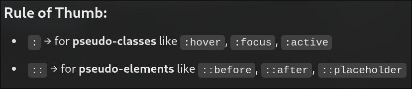

In practise an element can have multiple classes.
it can have multiple IDs where modern browsers support it since it is not an convention / supported feature in theory.
Attributes
you can use <div data-color="primary" class="tags"> and then in CSS ,
we can specify the selector as [data-color="primary"]{}
then specify the rules
We can also use even | odd for specifying parity like - child:nth-child(even)
We can insert elements dynamically through css like body::before{content:"this is a before content"}
Similarly we can use body::after aswell
These are called as pesudo elements example:::selection will style as the styled elements + body::first-line and
body::first-letter example2: for input::placeholder{}..

Box-Model
Generally without border box , everything that is applied to an element is for the content only.
For example: if height is given as 200, then the element's content is 200 units of height + border + margin +
padding.
But with border-box, The entire element is of height 200 Including border and padding not margin since
margin is External part of an element.
Margin Collapse: is the concept where the margin doesn't see other margin as an element that takes
space in the pages, and instead just overlaps itself on it.
for example: if there are two margin on the same side of the elements , like down for the upper
element and up for the lower element, the margin that has the largest number will be applied [ normal
physics ] .[ DAmn physics in COmputer sceince ]
CSS Properties
Font-family: When you want to specify the types of fonts that should be used. When the first fonts
is not available the second and the oncoming is used.
font-style: When you want to italize a font or change the style in someway.
font-weight: This is used to specify the weight of the font's boldness
text-decoration: This can be used to specify underlineOverline etc.
Line-height: spacing between the lines
letter-spacing: spacing between the letters
text-transform: Capitalize To capitalize the first alphabet of the word.
text-transform: upper/lower case As name says for the entire element
text-decoration-color:
text-decoration-style:
text-decoration-thickness:
text-indext: To add a spacing before the content of the element
text-overflow: To control the action on overflow
overflow: If somehow the content overflows , then the action that has to be implemented
word-break: Inorder to use the full width given, the words break at the end of the line
text-align:
Alignment of text
Colors
Colors can be represented in many types :
Using keywords
Using Hex codes
Using RGB
Using RGBa: Reg Green Blue Alpha [ opacity ]
Using HSL : Hue , Saturation ,Lightness . We can also use HSLa
The same implemention types can be used for background-color:
Imp sauce
the <p> can only store inline elements in it , while <div> can store almost all kinds of html
tags